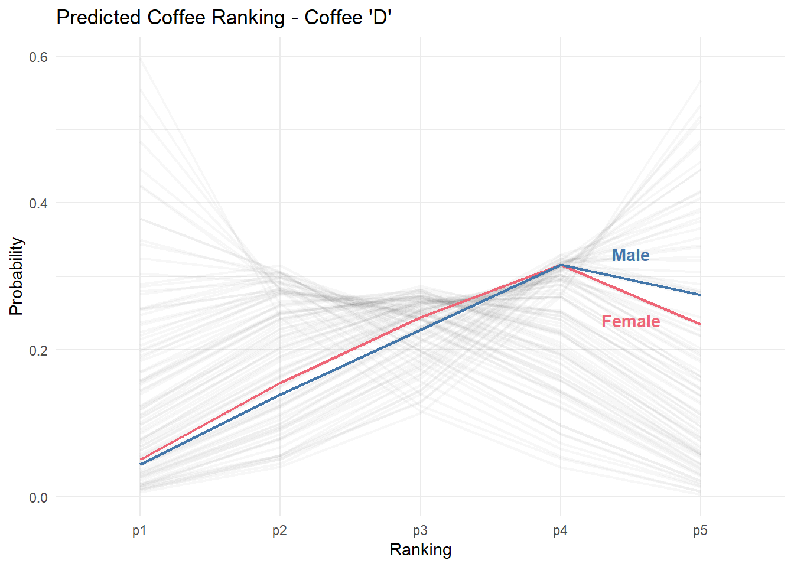

| age | gender | expertise | coffee | ranking |
|---|---|---|---|---|
| 18-24 | Other (please specify) | 10 | pref_a | 1 |
| 18-24 | Other (please specify) | 10 | pref_b | 1 |
| 18-24 | Other (please specify) | 10 | pref_c | 1 |
| 18-24 | Other (please specify) | 10 | pref_d | 1 |
| 55+ | Not Provided | 7 | pref_a | 3 |
| 55+ | Not Provided | 7 | pref_b | 3 |
| 55+ | Not Provided | 7 | pref_c | 3 |
| 55+ | Not Provided | 7 | pref_d | 3 |
| 25-34 | Female | 6 | pref_a | 3 |
| 25-34 | Female | 6 | pref_b | 3 |
The Great American Coffee Taste Test
In October I was lucky enough to participate in popular coffee YouTuber James Hoffman’s Great American Coffee Taste Test. In short, participants got 4 samples of coffee and were able to brew, taste, and rate them live. One the interesting parts of this was that the data was freely shared after the tasting was completed. As both a data and coffee nerd, I couldn’t resit a dive into this dataset.
The one we’re going to focus on is the unusual Coffee ‘D’. In contrast to the other coffees in the taste test, Coffee ‘D’ was a natural process. The difference between a washed coffee and natural coffee is:
Washed coffee and natural process coffee differ primarily in their processing methods. Washed coffee involves removing the outer fruit from the coffee bean before drying, using water to ferment and wash away the pulp, resulting in a clean, bright flavor profile with pronounced acidity. In contrast, natural process coffee involves drying the whole coffee cherry intact, allowing the bean to ferment inside the fruit, imparting a fruitier, sometimes wine-like, sweetness with a heavier body due to prolonged contact with the fruit, often exhibiting complex, earthy, or fermented flavor notes. These distinct processes significantly influence the taste and characteristics of the final brew, offering a spectrum of flavors to coffee enthusiasts.
The tl;dr is that natural process coffees tend to have more fermented, fruity flavors that are prized by some consumers, but often disliked by others. This is the one we’re going to focus our attention on here.
The survey
While there were numerous questions on the survey, my focus was primarily on the following:
- Age
- Gender
- Self-rated coffee expertise
I categorized ages into groups (18-24, 25-34, 35-44, 45-54, and 55+), and gender into (Male, Female). The self-rated coffee expertise was on a scale from 1 to 10, with 1 representing “I’m a novice” and 10 representing “I’m a coffee expert.”
Initially, we need to convert the survey data from a wide format to a long one. In the current data view, each person’s response is repeated four times (once for each coffee type), while their age, gender, and self-reported coffee expertise remain constant. This approach allows us to model responses more efficiently and retain information across different coffee types.
Fitting A Bayesian Model
We’re employing an ordinal regression model with a cumulative link function, which is a typical method for analyzing Likert-style data. Gender remains constant across all coffee categories, while we permit the effects of age and expertise to differ for each type of coffee. Essentially, this suggests that we assume broader gender differences for all coffees, while acknowledging that the effects of age and expertise may differ across various coffee types.
# set reasonable priors
prior <- c(prior(normal(0,2), class = Intercept),
prior(normal(0,2), class = b),
prior(normal(0,2), class = sd))
# hlm with varying slopes for expertise
# and varying intercepts for age
fit2 <-
brm(
ranking ~ 1 +
gender +
(age + expertise | coffee),
data = coffee_ranking,
prior = prior,
family = cumulative("probit"),
chains = 4,
cores = 4,
iter = 2000,
control = list(adapt_delta = 0.9)
)There are a few divergent transitions after fitting, but that can be fixed by upping the adapt_delta parameter. In general I’m satisfied with the fit, as all of our Rhat values are equal to 1.00, and the Bulk_ESS and Tail_ESS look fine too.
After fitting the model, we can get some initial insights by plotting out some of the model coefficients. Specifically, we probably want to focus our attention on the varying effects for age and expertise on coffee preferences. We can do this by extracting the random effects from the model and plotting them. Here, we can see the estimated effect of age on preferences for each coffee (relative to the 18-24 group).
…and the effect of self-reported expertise:
From this we see results that largely fit with what was reported in the video. Older people tend to dislike Coffee ‘A’ and ‘D’ more, and people with higher expertise tend to like them more.
Digging a little deeper: Males vs. Females
Let’s start by looking at all the predicted rankings for coffee ‘D’. In this case we have 500 different predictions, corresponding to all possible age x gender x expertise x ranking combinations. Each individual line represents the estimated ranking for a particular consumer.
Using this data we can do some simple comparisons. For example: what is the estimated difference between males and females ranking coffee ‘D’? In his summary, James Hoffman highlighted that females were much more likely to strongly dislike coffee ‘D’ relative to males. However, if you look at the data, females in the survey also generally reported much less expertise in coffee.
So what if we control for expertise, and see what the estimated difference in gender is assuming they are otherwise comparable coffee consumers. Below, we set the expertise for predictions to the median, which is 6.
And here are the estimates for males and females, holding age constant at 25-34 and self-reported expertise to the median (6). As we can see both males and females with similar expertise within the same age groups largely rate coffee D similarly, with the largest difference being for ranking it a 5.

So really, there aren’t very large difference in regards to gender after we control for expertise. The large gender difference that James sees in the survey is likely mostly an artifact of differences in experience with coffee between males and females1.
In fact, if we look at the differences in self-reported expertise we have estimated rankings for a male, aged 25-34 for self-reported expertise at 1, 5, and 10. As is fairly clear, the distribution of estimated rankings is substantially different across levels of expertise. For example, we estimate about an 80% probability that a person with a self-assessed expertise of 10 to rate coffee ‘D’ a 4 or 5. In contrast that drops to about 45% for a person with an expertise of 5, and 20% for a person with an expertise of 1.
If it’s not already clear, the biggest differences in rating the unusual natural-process coffee is not really related to gender, but rather it is mostly based on an individuals expertise or ‘expertise’ with coffee.
Comparing two hypothetical consumers
So now that we have our model, we can use it to pose any number of comparisons by relying on posterior draws.
Let’s first look at the most common age-gender-expertise combinations. Below we see that males largely make up the most common individuals who completed the survey. From a hypothetical perspective, let’s compare how the most common male respondent (between 25-34 years old with an expertise of 7) would rate a given coffee compared to the most common female respondent (25-34 with an expertise of 5).
Code
coffee_data %>%
count(age,gender,expertise) %>%
arrange(desc(n)) %>%
slice(1:10) %>%
kable()| age | gender | expertise | n |
|---|---|---|---|
| 25-34 years old | Male | 7 | 383 |
| 25-34 years old | Male | 6 | 305 |
| 25-34 years old | Male | 8 | 199 |
| 35-44 years old | Male | 7 | 168 |
| 25-34 years old | Male | 5 | 159 |
| 35-44 years old | Male | 6 | 159 |
| 35-44 years old | Male | 8 | 114 |
| 25-34 years old | Female | 5 | 84 |
| 25-34 years old | Male | 4 | 81 |
| 25-34 years old | Female | 6 | 80 |
First we need to compute 4000 posterior draws for each hypothetical user. These will be probabilities for our hypothetical person scoring a given coffee a 1 though a 5. We can get this by calling the posterior_epred function.
# get 4000 posterior draws for two hypothetical individuals
# for scoring a given coffee
# helper function for generating predictions
make_comparisons <-
function(fit,
pred_coffee,
pred_exp,
pred_age,
pred_gender) {
newdata <-
data.frame(
expertise = pred_exp,
age = pred_age,
gender = pred_gender,
coffee = pred_coffee
)
return(posterior_epred(fit2, newdata = newdata))
}
# get posterior draws
Z <-
make_comparisons(
fit2,
pred_coffee = c("pref_d"),
pred_exp = c(7, 5),
pred_age = "25-34",
pred_gender = c("Male", "Female")
)
# matrix of estimated differences
# p1 - p2
p_diff <- Z[, 1, 1:5] - Z[, 2, 1:5]Then we can put them into a dataframe and plot their distributions. As we can see, they are quite far apart. A 25-34 year old male with an expertise of 7 has a probability of about 35% of scoring coffee ‘D’ a 5, compared to 19% for female with an expertise of 5.
One nice thing about a Bayesian approach is that we have access to the full posterior, so we can compute any kind of comparisons. For example, what is the predicted median difference between these two individuals rating coffee ‘D’ a 5, with an 89% credible interval?
quantile(p_diff[,5], probs = c(.06, .5, .94)) 6% 50% 94%
0.1386954 0.1519386 0.1651294 Or we can plot the estimated difference of males and females for each of the response categories:
Or what if we had two consumers with similarly rated expertise, but one was much older?
Z2 <-
make_comparisons(
fit2,
pred_coffee = "pref_d",
pred_exp = 6,
pred_age = c("25-34", "55+"),
pred_gender = "Male"
)
p_diff_2 <- Z2[, 1, 1:5] - Z2[, 2, 1:5]
quantile(p_diff_2[,5], probs = c(.06, .5, .94)) 6% 50% 94%
0.1952684 0.2140120 0.2323127 Which suggests that the probability of a 25-34 year old rating coffee ‘D’ a 5 is about 21 percentage points higher than a 55+ year old individual. That’s a huge age difference!
Full Data
Code
library(tidyverse)
library(brms)
library(broom.mixed)
# load survey data here
coffee <- read_csv("/gatt.csv")
col_pal <- c( '#4477AA', '#EE6677', '#228833', '#CCBB44', '#66CCEE', '#AA3377')
set.seed(123)
## Function to extract random effects from brms model
pull_ranef <- function(x, idx){
return(
data.frame(x[,,idx]) %>%
mutate(coffee = rownames(.), variable = idx)
)
}
# Setup data
coffee_data <-
coffee %>%
select(
age = `What is your age?`,
gender = `Gender`,
expertise = `Lastly, how would you rate your own coffee expertise?`,
pref_a = `Coffee A - Personal Preference`,
pref_b = `Coffee B - Personal Preference`,
pref_c = `Coffee C - Personal Preference`,
pref_d = `Coffee D - Personal Preference`
) %>%
replace_na(
list(
age = 'Not Provided',
gender = 'Not Provided',
race = 'Not Provided',
education = 'Not Provided'
)
)
coffee_ranking <-
coffee_data %>%
na.omit() %>%
select(age, gender, expertise, pref_a:pref_d) %>%
pivot_longer(cols = starts_with("pref"),
names_to = "coffee",
values_to = "ranking") %>%
mutate(age = case_when(
age %in% c("<18 years old","18-24 years old") ~ "18-24",
age == "25-34 years old" ~ "25-34",
age == "35-44 years old" ~ "35-44",
age == "45-54 years old" ~ "45-54",
age %in% c("55-64 years old", ">65 years old") ~ "55+"
))
# fit model
fit2 <-
brm(
ranking ~ 1 +
gender +
(age + expertise | coffee),
data = coffee_ranking,
prior = prior,
family = cumulative("probit"),
chains = 4,
cores = 4,
iter = 2000,
control = list(adapt_delta = 0.99)
)
strata <- coffee_ranking %>%
filter(gender %in% c("Male","Female")) %>%
distinct(expertise, age, gender, coffee) %>%
complete(expertise,age,gender,coffee)
fit1_preds <-
predict(fit2, newdata = strata) %>%
data.frame()
pred_data <-
tibble(strata, fit1_preds) %>%
set_names(c(
'expertise',
'age',
'gender',
'coffee',
'p1',
'p2',
'p3',
'p4',
'p5'
)) %>%
mutate(
gender = fct_relevel(gender, "Male"),
age = fct_relevel(
age,
"18-24",
"25-34",
"35-44",
"45-54",
'55+'
)
) %>%
pivot_longer(cols = starts_with("p"),
names_to = 'ranking',
values_to = 'prob')
# random effects
fit2_summary <- ranef(fit2)[[1]]
vals <- c("Intercept","age25M34","age35M44","age45M54","age55P","expertise")
# pull into nice dataframe
res <-
sapply(vals, function(x) {
pull_ranef(fit2_summary, x)
},
simplify = FALSE) %>%
do.call(rbind, .)Footnotes
Given the viewership demographics for James’ channel, I actually assume that many of the female ratings are the partners of the male viewers, and are probably not as experienced as their partners↩︎